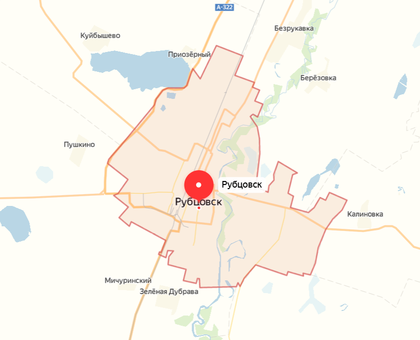

Немного о себе:
Родился в городе Рубцовске Алтайского края, учился в Гимназии №8 с 4 класса. Закончил школу ударником, сдал ЕГЭ
в сумме на 219 баллов и поступил в НГУЭУ, чего хотел еще с 9 класса. Теперь учусь на 1 курсе по направлению "Инноватика"
в группе ИН901. Увлекаюсь музыкой, спортом, волонтерством: играю на гитаре,
поднимаю железяки в тренажерном зале и участвую в различных мероприятиях.
|  | Мой город на карте России выглядит примерно так.
Как я уже сказал находится он в Алтайском крае, не далеко от границы с Казахстаном. Город относительно не большой, население
всего около 90 тысяч человек. |
А еще по WEB програмированию нам задают писать всякие сайты на HTML, а на сайтах еще и таблицы составлять,
как, наример, вот эти, которые мы на прошлой паре делали. Но кроме таблиц, надо еще и текст
красиво шрифтами разными там жирными, полужирными, подчеркнутыми оформить...